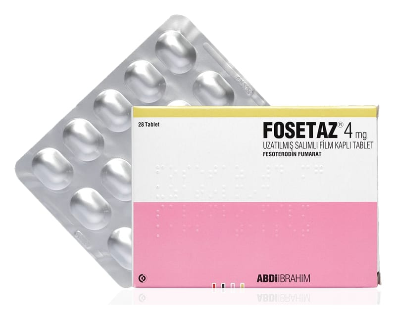

Fosetaz 4 mg Uzatılmış Salımlı Film Kaplı Tablet, 28 Adet

Ne için kullanılır
KT · Bölüm 1FOSETAZ antimuskarinik olarak anılan aşırı aktif mesanenin hareketini azaltan ve belirtilerini tedavi eden, tıbbi bir üründür. 1 adet uzatılmış salımlı film kaplı tablet, 3,1 mg fesoterodine eşdeğer 4 mg fesoterodin fumarat içermektedir.
Her FOSETAZ 4 mg uzatılmış salımlı film kaplı tablet; açık mavi, oval, bikonveks, bir yüzü “F4” baskılı, diğer yüzü baskısız, film kaplı tablettir. 14, 28 ve 84 tablet içeren blisterler halinde ambalajlanmıştır.
FOSETAZ aşırı aktif bir mesanenin şu tür belirtilerini tedavi eder: • Ani sıkışmayı takiben mesanenizi boşaltırken kontrol edememe (sıkışma inkontinansı denir) • Aniden mesanenizi boşaltma gereksinimi duyma (sıkışma denir) • Mesanenizi normalden daha sık boşaltmak zorunda kalma (idrar sıklığında artış denir)